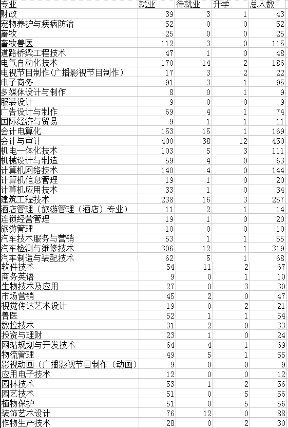

高考报志愿很发愁？数据帮你选
高考没过600，上不了985、211，同时又没有去复读一年的勇气，怎么办？告诉你，其实人生路条条大路通罗马，选择一个好的专科院校是很有必要的，如果想提升学历，上了大学后会有很多渠道去提升学历，提升自己的思想以及阅历。既然上不了自己想上的大学，那要选择一个什么样的学校和专业呢？
江湖上流传着这样一种说法：女生<70%的专业是女神集中营，女生>60%的专业是男生的幸福天堂，女汉子的发源地；女生>40%的是和谐平安人间；女生>30%是美男子的地狱；在高考报志愿时，考城市、学校、专业、就业外，考虑专业男女比例也提上日程。
我们以2017年保定职业技术学院毕业生数据为例，展开以下介绍， 简介：保定职业技术学院（以下简称保职院）位于河北省保定市，属于公办专科。共设有40余个专业，拥有国家骨干专业 2 个、省教改示范专业 3个、国家精品资源共享课程 2 门、省精品课程10门。建有先进制造、电子信息、财经商贸、现代农业、现代服务业、艺术设计、影视传媒等 12 个校内实训中心 130 余个实训室。与长城汽车、保定-中关村创新中心、中铁物流、中国网库、保定智慧农业联盟、大北农集团、保定广播电视台、保定市广告协会等多家知名企事业单位合作建设校外实训基地百余处。
好了，就说到这。以此为例，就算要求再多，也会通过此数据加以筛选找到一个喜欢并且适合的专业。保职院 2017 届毕业生 3140 人，男生共1681人，女生1489人，共涉及11个专业大类，其中文化教育大类、财经大类、农林牧渔大类、旅游大类、轻纺食品大类、艺术设计传媒大类、生化与药品大类女生人数比例偏高，制造大类、土建大类、交通运输大类、电子信息大类男生比例较高。如果你是男生，想选择小姐姐多一些的，可以选择女生人数比例高的一些专业大类，其中广播影视节目制作、会计电算化等一些专业也是很适合男孩子们学习的；如果你是女生，想选择小哥哥多一点的，工程造价、与计算机相关的一些专业等也非常适合学习。
那除了城市、 学校、 男女比例外，更多看重的是毕业后是否能找到好工作，根据数据显，截至 2017 年9月1日总体就业率数+升学人数）/总数×100％为其中94.39%升学 57 人，签署协议就业 113 人，其他形式就业 2794 人（其他就业形式包括参军入伍、国家基层就业和灵活就业）。
以及从所学专业与落实工作的相关程度上看,25.01%的毕业生认为所学专业与落实工作“很相关”，40.66%认为“相关”，认为“不好说”的有 12.79%，16.92%“不相关”，4.62%认为“很不相关”。
所以，不论选择什么样的院校，什么专业，找到一个自己喜欢又适合的专业，只要好好把握大学时光，大学就会很有意义的。